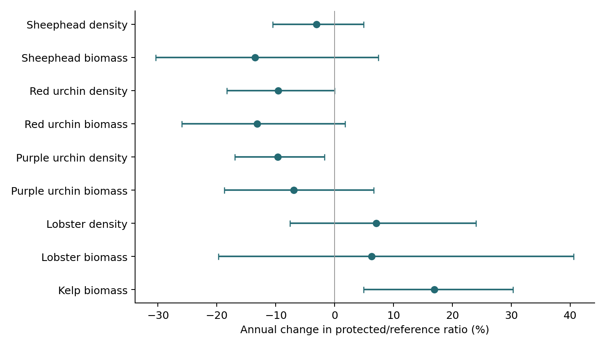
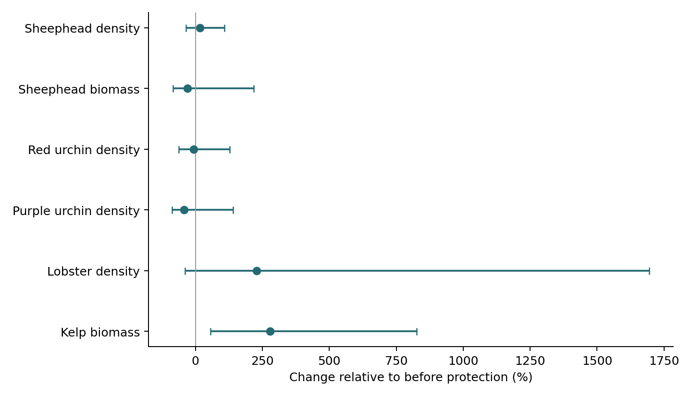

November 3, 2026 · Review only. Paper and frozen results unchanged.
3,483 comparison-years; 2,939 supported responses; 162 fitted histories.
Methods, limits and rebuild instructions
| Source | Resp | comparison_years | supported_years | histories |
|---|---|---|---|---|
| KFM | Bio | 423 | 246 | 15 |
| KFM | Den | 609 | 609 | 20 |
| LTER | Bio | 208 | 162 | 10 |
| LTER | Den | 162 | 159 | 8 |
| Landsat | Bio | 646 | 595 | 17 |
| PISCO | Bio | 713 | 446 | 52 |
| PISCO | Den | 722 | 722 | 53 |

Conditional joint estimates and 95% intervals. Positive values mean the protected/reference ratio increased through time; this is not a before–after effect of protection.

Flat-baseline model evaluated only across observed post-protection years. The pre-trend sensitivity is separate. Neither panel establishes an unconfounded causal effect.
| Component | Included | Limit |
|---|---|---|
| Observed sizes | Empirical size uncertainty is estimable within replicated samples. A singleton has no empirical within-sample variance. | Same-program/taxon sparse-size variance sensitivity; intervals remain conditional on that assumption. |
| LTER urchin group means | Original measurements give a mean diameter for a size class, not every individual diameter. | Within-group variation and the bias from applying a nonlinear equation to a mean cannot be recovered from these files. |
| Count sampling | Shared physical-unit resampling represents observed sampling variation. All-zero or unreplicated units cannot reveal their full sampling variance. | Residual process uncertainty remains; this is not a complete detection/count-observation likelihood. |
| Count–size association | Direct measurements stay with their count unit; separate size surveys have no individual links to counted animals. | Their unobserved count–size covariance cannot be estimated; do not describe the intervals as total uncertainty. |
| Borrowing | Reviewed PISCO target and calibration scope is enforced; size-sampling scatter is removed from residual prediction scatter before adding donor draws. | Prediction variance is conditional on estimated calibration and a lognormal working approximation; sparse calibration remains weak evidence. |
| KFM matching | Same physical site and declared date rule; no borrowing across years or unrelated sites. | Unsupported biomass remains missing, with density retained. No new KFM lobster biomass is inferred. |
| Shared references | Joint process terms and shared measurement draws connect documented physical stations. | Verified shared satellite pixels inform an overlap-weighted process kernel. Their spatial covariance and cross-program overlap remain unestimated; geometry alone is not a complete sampling covariance. |
| Time | Joint models estimate AR1 dependence using actual calendar gaps; fixed-dependence sensitivities remain available. | Variance and AR-boundary fits require attention. Confidence limits condition on nuisance covariance estimates. |
| Conversion equations | Point coefficients and observed monthly kelp coefficients are used consistently. | Coefficient covariance, detection bias, habitat mismatch and causal counterfactual validity are not measured by these intervals. |
| Publication | This is a coordinated review build, not a manuscript release. | Pathway/resilience/figure outputs in the paper must be regenerated and checked against an approved cohort before publication; no paper files changed. |